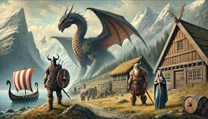
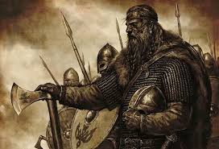

la mitologia nordica y el impacto en su sociedad
La mitología nórdica tuvo un impacto profundo en la sociedad de los pueblos escandinavos, no solo en su religión y cosmovisión, sino también en su organización social, política, arte y cultura cotidiana. Aquí te explico cómo la mitología nórdica influyó en diferentes aspectos de la sociedad nórdica.
vida diaria
Religión y Cosmovisión Panteón de los dioses: Los nórdicos creían en un panteón de dioses, como Odín, Thor, Freyja, Loki, entre otros, que representaban aspectos importantes de la vida, como la guerra, la fertilidad, la sabiduría, la justicia y la naturaleza. El destino y el fin del mundo: La mitología también hablaba de temas como el destino y el ciclo de la vida y la muerte, especialmente a través del concepto del Ragnarök (el fin del mundo). La vida después de la muerte: Las creencias sobre la vida después de la muerte, como el Valhalla y el Fólkvangr, influían en cómo los nórdicos vivían sus vidas.
sobre los nordicos
Cultura y Sociedad La mitología nórdica también influía profundamente en la estructura social y la organización de la sociedad vikinga. El concepto de honor y valentía: Los héroes mitológicos, como Sigurd el Dragón y los guerreros del Valhalla, representaban ideales de honor, coraje y sacrificio. La importancia de los guerreros: La mitología promovía una sociedad que valoraba enormemente las cualidades de los guerreros: fuerza, coraje y la habilidad para la lucha. El rol de las mujeres: En la mitología nórdica, las mujeres también jugaban un papel importante.